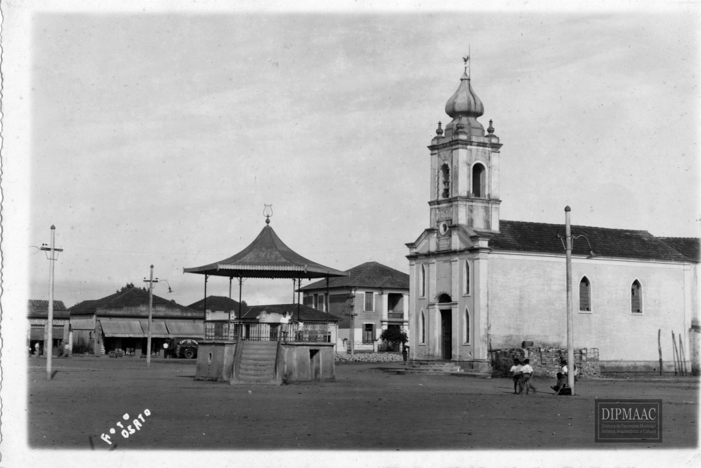

SUZANO
Sumário
A História do Município
índios e colonizadores
Viviam no território de Suzano os índios guaianás. Outras tribos, de tempos em tempos, passavam por aqui. Com a chegada dos colonizadores, os índios foram expulsos e as terras, ocupadas.
Desde o século 16 já era conhecido o local onde hoje está situado o município de Suzano. Incursões à caça de índios ou de ouro já aconteciam com pessoas vindas do litoral, inicialmente de São Vicente (fundada em 1532). Depois, já com os povoados de São Paulo de Piratininga, São Miguel Paulista e Itaquaquecetuba, a região foi se tornando mais conhecida. A principal atividade era a agricultura.
No primeiro documento que descreveu a área atual de Suzano, datado de 10 de dezembro de 1609, foi dada uma sesmaria a um certo "Rodrigues", que iria dos: "Campos de Ytacurubitiba no caminho que fez Gaspar Vaz que vae para Boigi Mirim a saber partindo da barra dum rio que se chama Guayao por elle arriba até dar em outro no que se chama... dali dará volta a demarcação pelas faldas do outeiro da banda do sudoeste e correrá avante até dar no rio grande Anhemby e por orio grande abaixo até dar digo até tornar aonde começou a partir a assim mas meia... com dois capões que estão de fronte da dita dada a saber um capão que se chama de Ytucurubitiva e outro... assupeva..."
"Guayao" era a grafia dada na época ao rio Guaió. Segundo historiadores, as terras ficavam entre os rios Guaió e Taiaçupeba – dois dos afluentes do rio Tietê que cortam Suzano.
Outros documentos semelhantes também descrevem Suzano. É o caso da sesmaria datada de 10 de abril de 1723, concedida a Santos Martins, cuja área ficava entre os rios Taiaçupeba Mirim e Taiaçupeba Guassu, ao sul da atual Vila Ipelândia: “de meia légua de comprido por uma de largo, no caminho que vai da dita vila (Santa Anna das Cruzes) para a de Santos, na passagem chamada Tijuco Preto”.
Em documento de delimitação da Vila de Mogi das Cruzes, primeiro núcleo populacional da região, datado de 1663, é citada a “Estrada Real do Guaió”, por onde passariam todos os que viessem do litoral ou de São Paulo em direção à vila. Essa estrada ficava ao sul da atual sede do município de Suzano, entre os rios Guaió e Taiaçupeba Mirim.
Descoberta do ouro
Na região conhecida na época como Caagaçu, na divisa entre Suzano e Ribeirão Pires, foram descobertos veios de ouro nas últimas décadas do século 17. Era ouro de aluvião, que é encontrado no leito e nos vales dos rios. A descoberta levou o governo a nomear o capitão Antônio Correia de Lemos, em 1699, para administrar as minas. Ele foi sucedido, em 1750, pelo capitão Bruno Neves. No final do século 18, as lavras auríferas ao sul da região teriam se esgotado, mas pesquisas históricas apontam que chegaram a ser as mais importantes da Capitania de São Vicente.
Nesse percurso da Estrada Real do Guaió, próximo à cabeceira do rio Taiaçupeba Mirim, a paragem começou a receber mais gente e se tornou um núcleo populacional conhecido por Taiaçupeba. Com o aumento da circulação de pessoas, por volta de 1720, o padre Antonio de Souza Oliveira ergueu no local a primeira capela, em honra a Nossa Senhora da Piedade.
Tempos depois, em 20 de setembro de 1750, tomou posse como administrador da capela Antonio Frazão Meirelles. Ele registrou em um documento o que encontrou: mais de 70 itens, entre eles objetos raros de serem encontrados numa capela na época, como dois confessionários, um sino de quatro arrobas, um cálice de prata, dois castiçais de bronze e tecidos finos para a imagem de Nossa Senhora.
A busca pelo ouro atraiu cada vez mais pessoas ao entorno da Capela de Nossa Senhora Piedade. Na segunda metade do século 18, estabeleceu-se na região o rico e poderoso fazendeiro Antonio Francisco Baruel. Ele tinha muitos escravos, o que era uma demonstração de riqueza, e há registros de um anúncio em jornal de São Paulo, datado de 1779, em que ele pede a captura de sete escravos que teriam fugido de sua propriedade levando ouro.
Nessa época, o local, antes conhecido por Taiaçupeba, passou a ser denominado pelo sobrenome de seu mais importante proprietário, Baruel. Mesmo depois de a família ter desaparecido da região, a designação do local continuou a ser Baruel.
O povoado que vivia no Baruel continuou se desenvolvendo. Com a chegada da estrada de ferro São Paulo Railway, construída pelos ingleses, até Rio Grande (atual Rio Grande da Serra), havia a expectativa de construção de um ramal ferroviário entre a estação de Rio Grande e Jacareí, no Vale do Paraíba. Tanto que foi instalada a primeira escola da região: uma “cadeira de primeiras letras para o sexo masculino”, junto à Capela de Nossa Senhora da Piedade, em 28 de março de 1870.
A construção do ramal ferroviário até o Baruel, porém, não se concretizou. O que teve início foi a obra da ligação ferroviária entre Rio de Janeiro e São Paulo, pela Companhia Ferrocarril, em 1873. Isso provocou uma alteração radical nos rumos do desenvolvimento e do centro populacional de Suzano. Com isso, a região do Baruel se estagnou, enquanto que o crescimento da cidade voltou-se para os lados do Guaió.
Vila de Concórdia
O trecho ferroviário entre São Paulo e Mogi das Cruzes foi inaugurado em 6 de novembro de 1875, com uma primeira parada na região de Guaianases. Bem no centro dos oito quilômetros de ferrovia que cortam o atual território de Suzano, entre os rios Guaió e Taiaçupeba Açu, conhecido como Campos de Mirambava, foi construída uma segunda parada para o embarque de lenha, que recebeu o nome de Piedade devido à proximidade (cerca de dez quilômetros ao sul) e à importância do vilarejo de Baruel, com sua Capela de Nossa Senhora da Piedade.
Junto à Parada Piedade, o jovem o português Antonio Marques Figueira, que trabalhava para a estrada de ferro, construiu sua casa, a primeira do local. Outros moradores se instalaram por ali. Pensando na necessidade de haver uma ocupação regular da cidade, Marques Figueira juntou-se a outros proprietários da região, como o major Francisco Pinheiro Froez, o major Guilherme Boucault e o conde João Romariz, com o objetivo de fundar uma cidade planejada e com uma estação de trem de passageiros.
Romariz desenhou, então, um projeto de arruamento, que partia da Parada Piedade, aprovado por decreto federal em agosto de 1890. A projeção já indicava um local para a construção de uma igreja, no quadrilátero entre as ruas Francisco Glicério, Benjamim Constant, Monsenhor Nuno e Felício de Camargo, o que se concretizou em 20 de janeiro de 1897, quando foi inaugurada a capela de São Sebastião (no local em que hoje está a Igreja Matriz de São Sebastião).
"Vila da Concordia" foi o nome dado ao local, fundado em 11 de dezembro de 1890. O nome de batismo, porém, nunca se popularizou: a região continuou a ser chamada de Guaió, nome do rio existente no local e que formava pântanos e brejos.
Em 11 de abril de 1891, depois da encampação da Ferrocarril pela Estrada de Ferro Central do Brasil, o povo local conseguiu que, no lugar da parada, fosse inaugurada a Estação Piedade. Em 1892, a vila recebeu uma classe para meninos. E em 1894 foi inaugurado o posto telegráfico.
Entrando no século 20, a estação de madeira já mostrava sinais de sua precariedade. A comunidade que vivia em seu entorno dependia da venda de carvão, lenha e madeira e temia a desativação da estação.
Os líderes locais foram, então, solicitar ao engenheiro da Estrada de Ferro Central do Brasil, residente em Mogi das Cruzes, que construísse uma estação de alvenaria. O engenheiro Joaquim Augusto Suzano Brandão providenciou os estudos e autorizou a construção, descrita como feita em "alvenaria de tijolo com área de 58,91m e plataforma cimentada coberta de zinco". A plataforma servia para embarque para São Paulo, de um lado, e, de outro, para Mogi das Cruzes.
De vila a distrito
Em 22 de dezembro de 1907, em homenagem ao engenheiro, a estação recebeu o nome de Suzano em um ato público. E em 11 de dezembro de 1908, 18 anos depois da fundação, a vila também passou a se chamar Suzano.
Um documento produzido por lideranças locais datado de 1919 informava, entre outros dados, que o vilarejo possuía 500 construções habitadas, colégio eleitoral com 50 cidadãos, distrito policial, mercado, igreja, duas escolas públicas para meninos e meninas e fazendas. Foi este documento que embasou o pedido para que a vila de Suzano fosse elevada a Distrito de Mogi das Cruzes.
Em dezembro de 1919, pela Lei Estadual nº 1.705, promulgada pelo então presidente do Estado Altino Arantes, a vila de Suzano, então com 2.707 habitantes, foi elevada a Distrito de Mogi das Cruzes. O ato oficial de instalação só veio a ocorrer efetivamente em 4 de maio de 1920, depois da nomeação, três dias antes, do subprefeito Antonio José da Costa Conceição.
A partir dos anos de 1920, com a chegada das primeiras fábricas, Suzano começou a crescer rapidamente. Instalaram-se no distrito a Vinícola Sóvis e a Sedas Maluf.
Mas a agricultura continuou a ser a principal força da economia do distrito. Milho, feijão, cana, mandioca, batata, tomate, rabanete, repolho, alface, couve, chicória e escarola estavam entre os principais produtos produzidos no distrito, que nesta época já contava com os primeiros imigrantes japoneses.
Suzano chegou a ser o maior produtor de morangos do Brasil. Os produtos seguiam para os grandes centros de trem e, depois, de caminhão, quando foi inaugurada a estrada São Paulo-Rio de Janeiro, em 1924.
Na década de 1930, a iluminação chegou ao distrito pela The São Paulo Tramway, Light and Power, a Light. E os primeiros ônibus, da empresa Nobuyohi Kodama, começaram a circular no trajeto Suzano-Palmeiras-Ouro Fino-Ribeirão Pires.
Na década de 1940, Suzano contava com cerca de 6.000 moradores. Este número pulou para 11.157 na década seguinte.
A emancipação
Embora a arrecadação do distrito fosse alta –chegou a ser a maior entre os distritos de Mogi no final da década de 1940–, ela não se refletia em benefícios para Suzano, que tinha muitos problemas de infraestrutura. Com a eleição de três representantes de Suzano para a Câmara de Mogi em 1947 (José da Costa Soares, Thadeu José de Moraes e Anis Fadul), iniciou-se um movimento pela emancipação político-administrativa do distrito.
Políticos, industriais, comerciantes, operários e lideranças de vários segmentos se solidarizaram à causa. Depois de um trabalhoso processo de alistamento, foi realizado um plebiscito no dia 10 de outubro de 1948, um dos requisitos para que o distrito requeresse sua autonomia. Votaram no plebiscito 1.938 eleitores, sendo que 1.925 foram favoráveis à emancipação, oito contra e um votou em branco.
Em 24 de dezembro do mesmo ano foi promulgada a Lei Estadual nº 233, assinada pelo então governador Adhemar de Barros, com a aprovação a instalação de Suzano como município autônomo a partir de 1º de janeiro de 1949. A missão seguinte seria eleger prefeito e vereadores.
As eleições para os primeiros vereadores e prefeito foram realizadas em 13 de março de 1949. Abdo Rachid venceu o concorrente José Mariano de Souza Coutinho Júnior. Os primeiros 13 vereadores eleitos e empossados no município, na mesma data, foram: Alberto Nunes Martins, Anis Fadul, Antônio José Pereira, Antônio Rachid, Benedito Gonçalves Pereira, Firmino José da Costa, Francisco Marques Figueira, José Adelino Moreira de Azevedo, José Gonçalves Capela, Paulo Magário, Pedro Nakamura, Thadeu José de Moraes e Yoshikawa Masayuki.
A cerimônia de posse foi realizada no antigo Cine Suzano, na Praça João Pessoa, no dia 2 de abril de 1949. A data foi definida posteriormente para as comemorações de aniversário da cidade.
A elevação a comarca
Depois de conquistada a emancipação e realizadas as eleições, o desafio seguinte foi elevar Suzano a comarca, o que representa a independência no Poder Judiciário. O pleito, iniciado em 1957 pelos vereadores João Antônio Módolo e Herculano Américo Pero e pelo prefeito João Alves Machado, foi acolhido pelos deputados estaduais Paulo Teixeira de Camargo e Blota Júnior. O projeto de lei foi aprovado pela Assembleia Legislativa e transformado na Lei Estadual nº 5.285, sancionada em 31 de dezembro de 1958.
A promulgação veio em 18 de fevereiro de 1959, pelo governador Jânio da Silva Quadros. A instalação da Comarca só foi realizada em 25 de maio de 1962. O primeiro juiz titular foi José Dourador e o primeiro promotor, Benedito José Barreto Fonseca.
Baseado nos livros “Suzano Estrada Real”, de Suami de Paula Azevedo, e “Memórias de Suzano – Histórias e fotos de todos os tempos, do vilarejo a cidade grande”, de Simone Leone, Carla Fiamini, Douglas Pires e Gisleine Zarbietti.
A grafia Susano foi dada pela lei estadual nº 8.092/1964. A correção para Suzano, em face do parecer nº 345/1984, da Procuradoria Geral do IBGE, foi dada pela lei estadual nº 7.810/1992.
Para mais informações consulte o site da Câmara de Suzano (Aqui!)
Dados sobre o município
O município de Suzano, que hoje conta com 206 quilômetros quadrados, está localizado na região do Alto Tietê, entre a zona leste da Grande São Paulo e o Vale do Paraíba. Faz divisa com os municípios de Itaquaquecetuba a norte, Mogi das Cruzes a leste, Santo André a sul, Rio Grande da Serra e Ribeirão Pires a sudoeste, Ferraz de Vasconcelos a oeste e Poá a noroeste.
O aniversário da cidade é no dia 2 de abril, o gentílico é suzanense e o atual prefeito da cidade é Rodrigo Kenji de Souza Ashiuchi
As Tabelas abaixo contém dados extraídos do Instituto Brasileiro de Geografia e Estatística(IBGE):
| POPULAÇÃO | |
|---|---|
| População estimada [2021] | 303.397 |
| População [2010] | 262.480 |
| Densidade demográfica [2010] | 1.272,93 hab/km2 |
| TRABALHO E RENDIMENTO | |
|---|---|
| Salário médio mensal dos trabalhadores formais [2020] | 2,6 salários mínimos |
| Pessoal ocupado [2020] | 77.049 |
| População ocupada [2020] | 25,6% |
| EDUCAÇÃO | |
|---|---|
| Taxa de escolarização de 6 a 14 anos [2010] | 96,7% |
| Matrículas no ensino fundamental [2021] | 43.221 |
| IDEB - Anos finais do ensino fundamental [2019] | 5,2 |
| Matrículas no ensino médio [2021] | 14.335 |
| Número de estabelecimentos de ensino fundamental [2021] | 102 |
| Número de estabelecimentos de ensino médio [2021] | 40 |
| ECONOMIA | |
|---|---|
| PIB per capita [2019] | R$40.453,09 |
| IDHM [2010] | 0,765 |
| Percentual de receitas oriundas de fontes externas [2017] | 64,4% |
| SAÚDE | |
|---|---|
| Mortalidade Infantil [2020] | 10,52 óbitos/mil nascidos vivos |
| Internações por diarreia [2016] | 0,1 internações/mil hab. |
| Estabelecimentos de Saúde SUS [2009] | 24 |
| TERRITÓRIO E AMBIENTE | |
|---|---|
| Área territorial [2021] | 206,236 km2 |
| Esgotamento sanitário adequado [2010] | 89,7% |
| Urbanização de vias públicas [2010] | 31,1% |
| Bioma [2019] | Mata Atlântica |
| Mesorregião [2021] | Metropolitana de SP |
| Microrregião [2021] | Mogi das Cruzes |
Abaixo é apresentada a pirâmide etária de Suzano (IBGE, 2010):